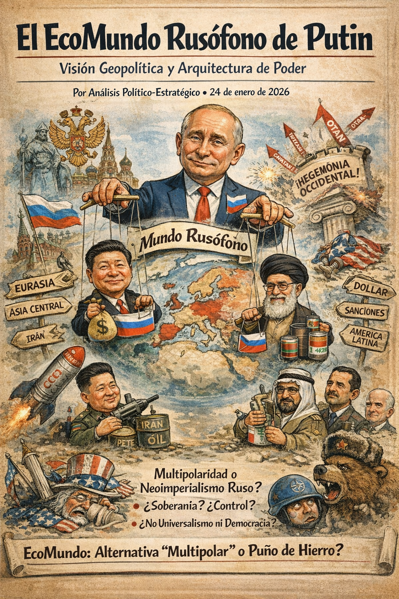
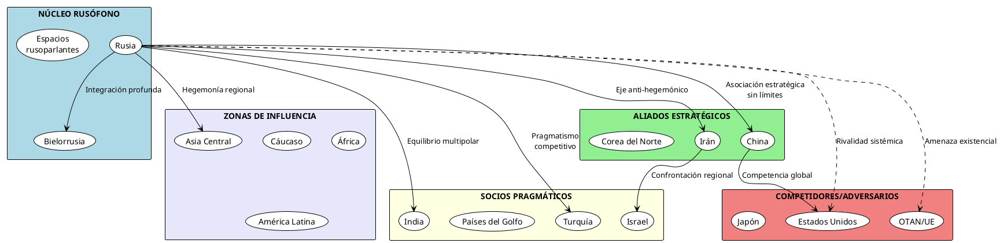
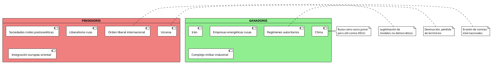
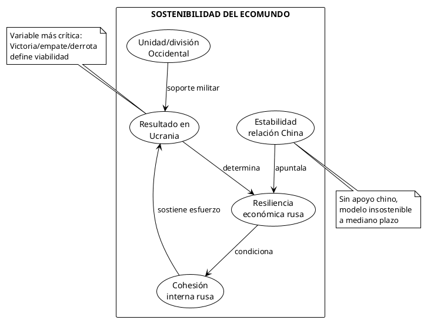

El EcoMundo Rusófono de Putin: Visión Geopolítica y Arquitectura de Poder
El EcoMundo Rusófono de Putin: Visión Geopolítica y Arquitectura de Poder

RESUMEN EJECUTIVO
El "EcoMundo Rusófono" de Vladimir Putin representa una visión geopolítica alternativa al orden internacional liberal occidental. Fundamentado en conceptos de multipolaridad, soberanía civilizacional y esfera de influencia histórica, este modelo busca restaurar el estatus de gran potencia de Rusia mediante la construcción de un espacio de integración postsoviético, alianzas estratégicas con potencias no occidentales, y la desarticulación del sistema hegemónico estadounidense. Este documento analiza los fundamentos ideológicos, la arquitectura de relaciones internacionales, los asesores clave y las implicaciones estratégicas de esta visión.
FUNDAMENTOS IDEOLÓGICOS Y COSMOVISIÓN PUTINIANA
El Núcleo Conceptual: Civilización vs. Universalismo
La visión de Putin rechaza el concepto de valores universales occidentales, defendiendo en su lugar la idea de "civilizaciones soberanas" con derechos históricos propios. Esta perspectiva se nutre de tres corrientes principales:
- Conservadurismo tradicional ruso: Énfasis en valores espirituales, familia tradicional y rechazo del liberalismo progresista
- Eurasianism: Rusia como civilización única entre Europa y Asia, con misión histórica propia
- Realismo geopolítico clásico: El mundo como tablero de esferas de influencia legítimas de grandes potencias
Principios Rectores del EcoMundo Rusófono
| Principio | Descripción | Aplicación Práctica |
|---|---|---|
| Multipolaridad | Rechazo de la hegemonía unipolar estadounidense | Promoción de bloques regionales (BRICS, OCS, EAEU) |
| Soberanía civilizacional | Derecho de cada civilización a sus propios valores | Defensa de "democracia soberana" rusa |
| Espacio postsoviético | Zona de influencia legítima e histórica | Integración eurasíática, protección rusoparlantes |
| No injerencia occidental | Rechazo de "revoluciones de color" | Contramedidas a expansión OTAN y UE |
| Pragmatismo estratégico | Alianzas basadas en intereses, no ideología | Relaciones simultáneas con Irán, Israel, China |
La Narrativa del Agravio Histórico
Putin articula un relato donde Rusia fue engañada tras la Guerra Fría. Elementos clave:
- Promesas verbales incumplidas sobre no expansión de OTAN (1990-1991)
- Humillación durante la década de 1990 y "terapia de choque" económica
- Intervenciones occidentales (Yugoslavia, Libia, Siria) como precedentes de cambio de régimen
- Doble rasero occidental en aplicación del derecho internacional
Esta narrativa justifica medidas "defensivas" de Rusia ante amenazas existenciales percibidas.
ARQUITECTURA DEL ECOMUNDO: RELACIONES ESTRATÉGICAS
Estructura Jerárquica de Relaciones

Relaciones con Estados Unidos: Rivalidad Sistémica
Visión de Putin: Estados Unidos como potencia hegemónica en declive que busca mantener su dominación mediante:
- Expansión de OTAN hasta fronteras rusas
- Promoción de cambios de régimen ("revoluciones de color")
- Uso del dólar y sanciones como arma geopolítica
- Mantenimiento de sistema de alianzas que cercan a Rusia
Estrategia rusa:
- Confrontación en zonas de influencia (Ucrania, Siria, Venezuela)
- Desarrollo de capacidades de disuasión nuclear avanzadas
- Guerra híbrida: cibernética, desinformación, apoyo a fuerzas anti-establishment occidentales
- Socavamiento del orden liberal mediante apoyo a movimientos populistas
Balance: Relación de suma cero con riesgo de escalada controlada
China: La Asociación Estratégica Central
Naturaleza de la relación:
- Convergencia antihegemónica sin alianza formal
- Complementariedad: energía/armas rusas por manufactura/tecnología china
- Coordinación en BRICS, OCS, ONU para bloquear iniciativas occidentales
Visión de Putin:
- China como contrapeso esencial a hegemonía estadounidense
- Socio que respeta soberanía rusa (no interfiere en política interna)
- Oportunidad económica ante sanciones occidentales
Asimetrías y tensiones:
- Rusia es socio junior económicamente (PIB chino ~10x mayor)
- Competencia potencial en Asia Central
- Dependencia energética rusa creciente hacia China
| Aspecto | Situación Actual | Tendencia |
|---|---|---|
| Comercio bilateral | ~200.000M USD (2023) | Creciente (↑) |
| Energía | 20% exportaciones rusas a China | Dependencia aumentando |
| Militar | Ejercicios conjuntos regulares | Cooperación profundizándose |
| Tecnología | Importaciones chinas críticas post-sanciones | Integración forzada |
Europa: Del Pragmatismo a la Confrontación
Evolución de la visión:
- Años 2000: Europa como socio económico vital (energía, inversión)
- 2014: Decepción tras sanciones por Crimea
- 2022-presente: Europa como vasallo de EEUU sin autonomía estratégica
Estrategia actual:
- Fragmentación de unidad europea mediante:
- Relaciones preferenciales con Hungría, Serbia
- Presión energética y migratoria
- Apoyo a partidos euroescépticos
- Relación transaccional con Alemania, Francia, Italia según coyuntura
- Rechazo absoluto de adhesión de Ucrania a UE/OTAN
Irán: El Eje Anti-Hegemónico
Convergencias:
- Oposición común a influencia estadounidense en Medio Oriente
- Coordinación en Siria (apoyo a Assad)
- Cooperación militar creciente (drones iraníes en Ucrania)
- Burla conjunta de sanciones occidentales
Limitaciones:
- Competencia en mercados energéticos
- Rusia mantiene relaciones con adversarios de Irán (Israel, Arabia Saudí)
- No existe alianza formal que obligue militarmente a Rusia
Israel: Equilibrio Complejo
Visión pragmática:
- Israel como actor regional relevante con amplia diáspora rusa
- Coordinación en Siria para evitar escalada no deseada
- Relaciones económicas y culturales significativas
Tensiones:
- Apoyo ruso a Irán y Hezbollah
- Presión sobre Israel para no apoyar a Ucrania
- Equilibrio precario que puede romperse según coyuntura
Mundo en Desarrollo: África, América Latina, Asia
Estrategia:
- Posicionamiento como alternativa a Occidente sin condicionalidades
- Venta de armas, seguridad, energía nuclear
- Narrativa anticolonial y anti-imperialista
- Apoyo a regímenes autoritarios (Venezuela, Nicaragua, Mali, CAR)
Instrumentos:
- Grupo Wagner y mercenarios en África
- Venta de trigo a precios competitivos
- Desinformación vía RT, Sputnik
- Diplomacia de cumbres (Foro Económico de San Petersburgo, cumbres Rusia-África)
GANADORES Y PERDEDORES EN EL ECOMUNDO RUSÓFONO
Ganadores Potenciales

Tabla Detallada: Balance de Ganadores y Perdedores
| Actor | Status | Beneficios | Costos |
|---|---|---|---|
| China | Gran ganador | Rusia dependiente energéticamente; aliado antihegemónico; debilitamiento OTAN en Europa permite enfoque en Asia | Riesgo de escalada nuclear; precedente de invasiones |
| Irán | Ganador moderado | Socio estratégico importante; acceso a tecnología militar | Mayor aislamiento conjunto con Rusia |
| India | Ganador táctico | Petróleo ruso con descuento; mantiene equidistancia | Presión occidental; riesgo de sanciones secundarias |
| Ucrania | Gran perdedor | Ninguno | Destrucción masiva, pérdidas territoriales, 100.000+ bajas |
| Europa | Perdedor | Ninguno | Crisis energética, inflación, costos militares, refugiados |
| EEUU | Perdedor parcial | Unificación OTAN | Desgaste económico, distracción de Indo-Pacífico |
| Orden liberal | Gran perdedor | Ninguno | Erosión de normas, fragmentación, precedentes territoriales |
Ganadores Internos en Rusia
- Siloviki (hombres de seguridad): FSB, GRU, militares de alto rango
- Oligarcas leales: Sectores energético, defensa, construcción
- Clase media nacionalista: Beneficiaria de narrativa imperial restaurada
- Iglesia Ortodoxa Rusa: Mayor influencia ideológica
Perdedores Internos en Rusia
- Liberales y clase media cosmopolita: Represión, emigración masiva (700.000+ desde 2022)
- Jóvenes educados: Movilización militar, aislamiento internacional
- Regiones pobres: Mayor carga de reclutamiento militar
- Economía de largo plazo: Sanciones, fuga de cerebros, aislamiento tecnológico
ASESORES E INFLUENCIA INTELECTUAL
Círculo de Asesores Clave
Tier 1: Acceso Directo y Máxima Influencia
- Nikolai Patrushev (Secretario Consejo de Seguridad)
- Ideólogo del antioccidentalismo
- Promotor de teorías conspirativas sobre cerco occidental
- Influencia en seguridad nacional y política exterior
- Sergei Lavrov (Ministro de Asuntos Exteriores)
- Arquitecto de diplomacia multipolar
- Narrativa de "rusofobia" occidental
- Gestión de relaciones con China, India, Medio Oriente
- Sergei Shoigu (ex-Ministro de Defensa, ahora Secretario Consejo de Seguridad)
- Modernización militar 2008-2022
- Relaciones con China, India en ámbito militar
- Yuri Ushakov (Asesor de Política Exterior)
- Gestión táctica de relaciones con Occidente
- Contactos con líderes europeos
Tier 2: Influencia Ideológica
- Alexander Dugin (Filósofo, ideólogo)
- Teoría eurasianista: Rusia como civilización telúrica vs. Occidente talasócrata
- Influencia indirecta pero significativa en narrativa imperial
- Concepto de "Mundo Ruso" (Russkiy Mir)
- Vladislav Surkov (ex-asesor)
- Concepto de "democracia soberana"
- Arquitecto de gestión de élites y "poder vertical"
- Sergei Karaganov (Académico, Consejo de Política Exterior y de Defensa)
- Teoría de "paz nuclear": amenaza nuclear como disuasión legítima
- Pragmatismo en relaciones con Asia
Influencias Intelectuales Históricas
- Ivan Ilyin (filósofo ruso blanco): Crítica al liberalismo occidental, defensa del autoritarismo ruso
- Konstantin Leontiev: Conservadurismo cultural, antioccidentalismo
- Lev Gumilev: Teoría de passionarnost y etnogénesis eurasianista
- Carl Schmitt: Concepto de soberanía y excepción, amigo/enemigo
- Henry Kissinger: Realismo geopolítico, esferas de influencia
Matriz de Influencia de Asesores
| Asesor | Área de Influencia | Orientación | Impacto en EcoMundo |
|---|---|---|---|
| Patrushev | Seguridad, antioccidentalismo | Línea dura | Muy alto - Paranoia estratégica |
| Lavrov | Diplomacia, multipolaridad | Pragmático-confrontacional | Alto - Arquitectura de alianzas |
| Dugin | Ideología, identidad | Extremo nacionalista | Medio - Narrativa legitimadora |
| Karaganov | Estrategia nuclear | Realista agresivo | Alto - Doctrina de disuasión |
| Ushakov | Táctica occidental | Pragmático | Medio - Gestión de crisis |
IMPLICACIONES Y PROYECCIONES ESTRATÉGICAS
Escenarios de Evolución del EcoMundo (2026-2035)
Escenario 1: Consolidación Multipolar (Probabilidad: 40%)
- Conflicto en Ucrania se estabiliza en líneas actuales
- Consolidación de eje Rusia-China-Irán
- Fragmentación creciente del orden internacional
- BRICS+ se convierte en bloque económico significativo
- Occidente se adapta a realidad multipolar
Escenario 2: Desgaste y Repliegue Ruso (Probabilidad: 35%)
- Estancamiento militar y económico prolonga crisis
- Sanciones erosionan capacidad estatal rusa
- China mantiene distancia estratégica de Rusia
- Transición postPutin abre revisión de política exterior
- Rusia se convierte en potencia regional debilitada
Escenario 3: Escalada y Confrontación Sistémica (Probabilidad: 25%)
- Expansión del conflicto a otros teatros (Bálticos, Moldavia)
- Crisis nuclear o uso de armas nucleares tácticas
- División del mundo en bloques irreconciliables
- Desintegración del sistema de gobernanza global
- Riesgo de gran guerra por error de cálculo
Factores Críticos Determinantes

Vulnerabilidades Estructurales del EcoMundo
- Económicas:
- Dependencia excesiva de exportaciones energéticas
- Sanciones tecnológicas limitan modernización
- PIB menor que Italia: base material insuficiente para ambiciones
- Demográficas:
- Población en declive (-500.000 anual)
- Emigración de capital humano cualificado
- Pérdidas militares (estimadas 100.000+ bajas)
- Políticas:
- Modelo centrado en Putin sin sucesión clara
- Represión creciente erosiona legitimidad
- Nacionalismo puede volverse contra el régimen si fracasa
- Estratégicas:
- Asimetría creciente con China (dependencia)
- OTAN más unida y expandida (Finlandia, Suecia)
- Aislamiento tecnológico de Occidente
CONCLUSIONES
Evaluación General del EcoMundo Rusófono
El EcoMundo Rusófono de Putin representa un proyecto geopolítico coherente pero altamente arriesgado de restauración del estatus de gran potencia. Fundamentado en una cosmovisión antioccidental, multipolar y civilizacional, busca crear un orden alternativo mediante alianzas estratégicas (China, Irán), control del espacio postsoviético, y desarticulación del sistema liberal.
Fortalezas del Modelo
- Narrativa clara que apela a resentimientos históricos y culturales
- Alianza estratégica con China proporciona respaldo económico y político
- Capacidades militares y nucleares garantizan relevancia global
- Atractivo para regímenes autoritarios y países del Sur Global
Debilidades Críticas
- Base económica insuficiente para ambiciones globales
- Dependencia asimétrica creciente de China
- Aislamiento tecnológico occidental limita modernización
- Demografía en declive y fuga de cerebros
- Modelo político personalista sin sucesión clara
Proyección Final
La sostenibilidad del EcoMundo Rusófono depende críticamente de tres factores: (1) capacidad de evitar derrota estratégica en Ucrania, (2) mantenimiento del apoyo chino sin subordinación excesiva, (3) resiliencia económica ante sanciones prolongadas.
El escenario más probable es una consolidación parcial como potencia regional disruptiva dentro de un sistema multipolar, pero con capacidad limitada para revertir fundamentalmente el orden internacional. La visión imperial total de Putin probablemente excede las capacidades materiales rusas, pero el proyecto tendrá éxito en fragmentar y debilitar el orden liberal occidental.
El mundo que emerge será más multipolar, más autoritario, y menos regulado por normas internacionales, con Rusia como actor desestabilizador significativo pero no como potencia hegemónica alternativa a Estados Unidos.
REFERENCIAS DOCUMENTALES
- Putin, V. (2021). "On the Historical Unity of Russians and Ukrainians". Kremlin.ru
- Documento de Seguridad Nacional de la Federación Rusa (2023)
- Discurso de Putin en Conferencia de Múnich sobre Seguridad (2007)
- Concepto de Política Exterior de la Federación Rusa (2023)
- Dugin, A. (1997). "Foundations of Geopolitics"
- Karaganov, S. (2023). "Nuclear Peace and Strategic Stability"
- Informes del Instituto de Estudios de la Guerra (ISW)
- Análisis de Chatham House sobre política exterior rusa
- Carnegie Endowment: "Russia's Foreign Policy Evolution"
- SIPRI Database on Russia-China Military Cooperation
"No estamos eligiendo entre Oriente y Occidente. Rusia es una civilización única. No es ni Europa ni Asia. Somos rusoeuropeos, o como decían nuestros antepasados, euroasiáticos." — Vladimir Putin
— Nota metodológica: Este análisis se basa en documentos oficiales rusos, discursos de Putin, escritos de asesores clave, y análisis de centros de estudios estratégicos internacionales. Las proyecciones son analíticas, no normativas.